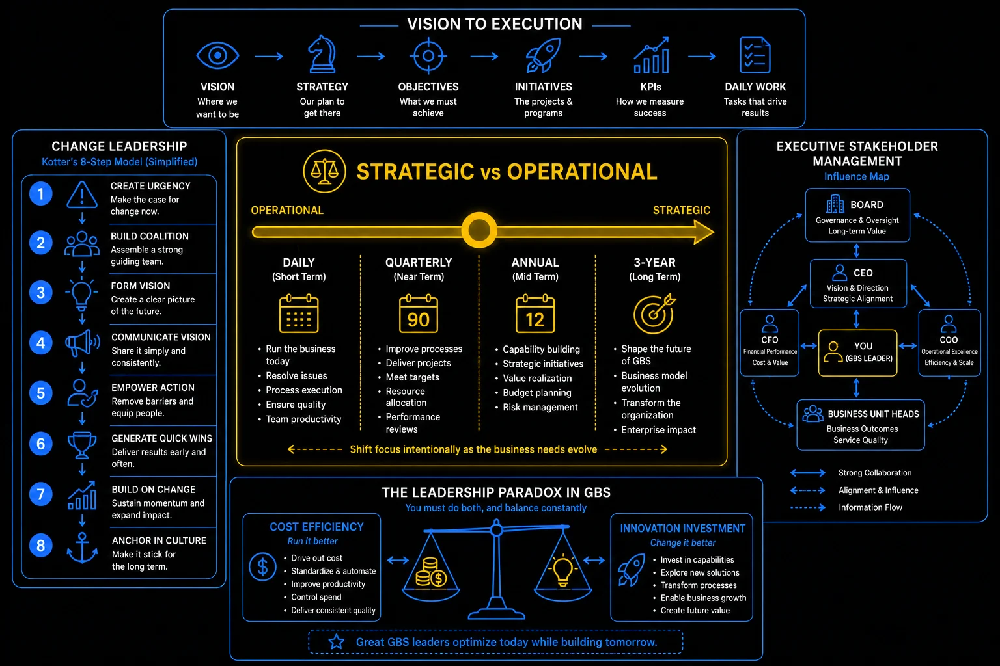

Pillar 7 · Cluster 4
Strategic leadership for GBS managers
Budgets, P&L understanding, org design, and psychological safety are the strategic capabilities that separate operational managers from GBS leaders who shape the organization.
Topic 01 · Financial Management
Budgeting — Capex, Opex, and headcount planning
If you manage a team, you either own a budget or influence one. Understanding Capex vs Opex, FTE costing, and budget defense is not optional for managers who want to lead.
- Opex (Operating Expenditure) — recurring costs: salaries, software licenses, travel, training. This is your annual run-rate budget.
- Capex (Capital Expenditure) — one-time investments: system implementations, infrastructure, major tool purchases. Amortized over useful life on the balance sheet.
- FTE costing — fully loaded cost per employee includes salary, benefits, taxes, overhead allocation, and facilities. Typically 1.3-1.7x base salary.
- Budget defense — justify every line item with business impact. "We need this" is not a business case. "This investment reduces processing cost by $200K annually" is.
- Variance management — track actuals vs budget monthly. Explain variances before someone asks you to.
Vision to execution — strategy, objectives, initiatives, KPIs, daily work

GBS strategic leadership: great leaders optimize today while building tomorrow
Topic 02 · Financial Literacy
Understanding the P&L for non-finance managers
You do not need to be an accountant. But you need to understand where your team shows up on the income statement and how your operational decisions affect the numbers.
- Revenue line — GBS is typically a cost center, not a revenue generator. Your value shows up as cost reduction, not revenue growth.
- Cost of delivery — your team's fully loaded cost is an operating expense. Every efficiency you create reduces this line.
- SGA (Selling, General and Administrative) — many GBS costs sit here. Understanding the classification matters for how leadership views your function.
- EBITDA impact — your cost savings flow through to EBITDA. When you save $500K in processing costs, that is a direct bottom-line impact.
Topic 03 · Organization Structure
Org design — span of control and layering
Too many layers slow decisions. Too few create overwhelmed managers. Org design in GBS is about finding the structure that balances control, speed, and development.
- Span of control — GBS operational team leads typically manage 8-15 direct reports; senior managers manage 5-8
- Layering — every organizational layer adds communication delay and interpretation risk; aim for the fewest layers that maintain control
- Specialist vs generalist teams — process-aligned teams (all AP in one team) vs customer-aligned teams (all services for one BU in one team)
- Hybrid models — combining process specialization for efficiency with customer-facing relationship management for service quality
Kotter's 8-step change model — urgency through anchoring
Topic 04 · Team Environment
Psychological safety and team resilience
Teams where people are afraid to speak up, admit mistakes, or challenge ideas perform worse on every metric. Psychological safety enables honest, productive work.
- Model vulnerability — share your own mistakes and learning moments; if the manager never admits error, the team will not either
- Respond to bad news constructively — how you react to problems determines whether people will tell you about them early or hide them
- Separate the person from the idea — critique proposals and decisions, not the people who made them
- Invite dissent explicitly — "What am I missing?" and "Who sees this differently?" create permission to challenge
- Follow through on commitments to the team — broken promises destroy trust faster than any other management behavior
- Google's Project Aristotle found that psychological safety was the single most important factor in team effectiveness — above skill, experience, and resources.
- In GBS, psychological safety directly impacts error reporting. Teams afraid to report mistakes create hidden quality problems that surface as audit findings or customer complaints.
The leadership paradox — cost efficiency vs innovation investment
Reference
Glossary
Full glossary at the GBS Insider Club Field Guide.
- Google — Project Aristotle research on team effectiveness, 2015
- Edmondson, Amy — The Fearless Organization, Wiley, 2018
- McKinsey — Organization design for the future, 2024
- CIMA — Management Accounting for Non-Finance Managers, 2024
Knowing the frameworks is the entry ticket. Applying them — visibly, at your actual job — is what gets you promoted.
The GBS Insider Club Career Paths turn this theory into a guided 90-day program for your role: self-assessment, practical exercises, templates, and Julian's unfiltered practitioner playbook.
Explore the Career Paths → Back to Leadership and People